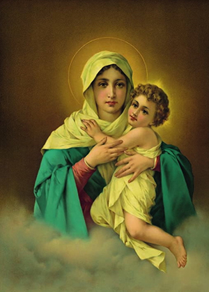
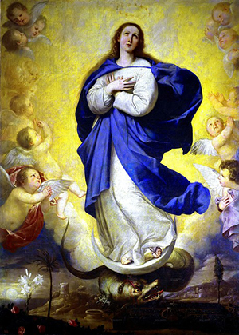
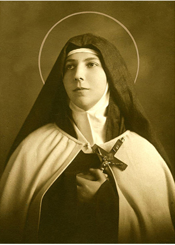

Toggle navigation
Parroquia La Matriz
Del Redentor del Mundo
Inicio
Nuestra Parroquia
Nuestra Parroquia
Nuestra Historia
Nuestro Barrio
Acción Social
¿Qué es Acción Social?
Capacitación Computacional
Comedor 421
Escuela de Fútbol Santiago Wanderers
Talleres
¿Qué son los Talleres?
Catequesis
Encuentro de Jóvenes con el Espíritu
Grupo de Oración Luz y Amor
Grupo Sol de Primavera
Infancia Misionera
Pastoral Familiar
Apostolados
Servicios a la Comunidad
Vínculos
USTED ESTÁ AQUÍ:
Servicios a la Comunidad
ACCEDE A:
Evangelio del Día
Santoral
SÍGUENOS EN:
SERVICIOS A LA COMUNIDAD
SECRETARÍA
Horarios de Atención
Lu:16:00 - 20:00 hrs
Ma a Vi:10:00 - 13:00 hrs y 16:00 - 20:00 hrs
Sá:10:00 - 13:00 y 15:30 - 20:00 hrs
CONFESIONES
Horarios de Confesión
Lu: 16:00 - 18:00 hrs
Ma: 16:00 - 19:00 hrs
Mi: 10:00 - 13:00 hrs
Ju y Vi: 10:00 - 13:00 hrs
Do: 10:00 - 13:30 hrs
UNCIÓN A ENFERMOS
¿Qué es la Unción de Enfermos?
Es el sacramento que da la Iglesia para atraer la salud de alma, espíritu y cuerpo al cristiano en estado de enfermedad grave o vejez.
¿Cuántas veces puede recibir el sacramento un cristiano?
Las veces que sea necesaria, siempre que sea en estado grave. Puede recibirlo incluso cuando el estado grave se produce como recaída de un estado anterior por el que ya había recibido el sacramento.
¿Qué efectos tiene la Unción de enfermos?
La unción une al enfermo a la Pasión de Cristo para su bien y el de toda la Iglesia; obtiene consuelo, paz y ánimo; obtiene el perdón de los pecados (si el enfermo no ha podido obtenerlo por el sacramento de la reconciliación), restablece la salud corporal (si conviene a la salud espiritual) y prepara para el paso a la vida eterna.
Para solicitar este servicio, es necesario llenar el siguiente formulario y secretaría se comunicará en la brevedad.
NOMBRE DEL ENFERMO
APELLIDO DEL ENFERMO
TELÉFONO DE CONTACTO
NOMBRE DEL CONTACTO
COMENTARIO
CORONAS DE CARIDAD
¿ Qué es una Corona de Caridad ?
Una Corona de Caridad es un símbolo de condolencia que se envía a los deudos. Con ella, estarás entregando una significativa tarjeta que además, invita a participar de una misa en la cual se pide por el alma del fallecido. Cada Corona de Caridad es un aporte a miles de personas que llegan diariamente a nuestra Parroquia.
Para solicitar este servicio, es necesario llenar el siguiente formulario. Al terminar realice una transacción bancaria a la Cuenta Vista, 08-111-439-82, Banco Estado, Parroquia La Matriz, parroquialamatriz@hotmail.com y enviar el comprobante vía correo electrónico. Este servicio también puede ser pedido y pagado presencialmente en secretaría.
Seleccione el diseño a enviar



Datos del difunto
NOMBRES
APELLIDOS
A quién(es) va dirigido
NOMBRE(S) COMPLETO(S)
Dirección de envío
CALLE
NÚMERO
COMUNA
REGIÓN
Datos de quien envía
RUT
NOMBRES
APELLIDOS
CALLE
NÚMERO
COMUNA
REGIÓN
TELÉFONO
E-MAIL
Donación
DONACIÓN MÍNIMA $2.000 pesos chilenos.
BAUTIZOS
Los efectos que produce el bautismo son: perdona el pecado original, y cualquier otro pecado, con las penas debidas por ellas. Se nos dan las tres divinas personas junto con la gracia santificante. Infunde la gracia santificante, las virtudes sobrenaturales y los dones del Espíritu Santo. Imprime en el alma el carácter sacramental que nos hace cristianos para siempre. Nos incorpora a la Iglesia.
¿El bautismo es necesario para la salvación?
Según el plan del Señor, el bautismo es necesario para la salvación, como lo es la Iglesia misma, a la que introduce el bautismo.
¿Quién puede bautizar?
Ordinariamente puede bautizar el obispo, el sacerdote y el Diácono, pero en caso de necesidad puede hacerlo cualquier persona que tenga intención de hacer lo que hace la Iglesia.
¿Cómo se bautiza?
Se bautiza derramando agua sobre la cabeza y diciendo: "Yo te Bautizo en el nombre del Padre, del Hijo y del Espíritu Santo".
¿Qué es el Catecumenado?
Es la preparación que deben recibir aquellos que van a bautizarse habiendo alcanzado el uso de la razón.
Requisitos
Acércate a la Oficina Parroquial para inscribir al niño con los mismos nombres y apellidos que se leen en los documentos civiles. Para ello, lleva el certificado de nacimiento o la libreta de familia. Allí se te invitará a los Encuentros de Catequesis Bautismal con los que podrás preparar este acontecimiento tan importante para la vida de tu hijo y para tu familia.
Requisitos para los Padrinos
Los padrinos tienen el papel – junto con los padres del niño- de presentar al niño que va a recibir el Bautismo, procurar que después lleve una vida cristiana de acuerdo a su fe y cumpla fielmente las obligaciones contraídas en este sacramento.
Todo el que va a ser bautizado debe contar con, al menos, un padrino. Para ser padrino es necesario que haya sido elegido por los padres del niño o por quienes ocupen su lugar. Debe tener sobre los 16 años, ser católico, haya recibido la primera comunión y lleve una vida congruente con la fe y la misión que va asumir. En caso de no estar confirmado, deberá hablar con el Párroco . Lo mismo en el caso de que no cumple el requisito de la edad. No puede ser el padre o la madre de quien se va a bautizar. No puede, además estar afectado por una pena canónica legítimamente impuesta y declarada.
Los padrinos en caso de ser casados, deben serlo también por la Iglesia. No podrán ser padrinos los no creyentes, los que pertenecen a alguna secta, divorciados y vueltos a casar, miembros de otra confesión religiosa, y convivientes. El bautizado que pertenece a una comunidad eclesial no católica sólo puede ser admitido junto con un padrino católico, y exclusivamente en calidad de testigo del bautismo.
Se podrá admitir como padrino o madrina un hermano o una hermana mayor del niño de menos de 15 años de edad, con tal que haya hecho la primera comunión o se esté preparando para hacerla.
En todo caso, si tú presentas alguna de estas características y otra, no dudes de acercarte a la Oficina Parroquial o al Párroco para aclarar tu situación.
Para solicitar este servicio, es necesario llenar el siguiente formulario y secretaría se comunicará en la brevedad.
NOMBRES DEL BAUTIZAD
APELLIDOS DEL BAUTIZADO
EDAD
TELÉFONO DE CONTACTO
NOMBRE DEL CONTACTO
COMENTARIO
PRIMERA COMUNIÓN
Una primera comunión es un ritual sacramental de la Iglesia católica, por medio del cual una persona, generalmente menor de edad, participa por primera vez del sacramento de la Eucaristía recibiendo la Comunión (recibir el cuerpo y la sangre de Jesus), siendo un requisito obligatorio haber obtenido antes el sacramento del Bautismo y el de la Penitencia o confesión.
La ceremonia de la Primera Comunión ocurre siempre entorno a una celebración eucarística, o liturgia y en todos los casos debe ser oficiada por un sacerdote.
Para solicitar este servicio, es necesario llenar el siguiente formulario y secretaría se comunicará en la brevedad.
NOMBRES
APELLIDOS
EDAD
TELÉFONO DE CONTACTO
NOMBRE DEL CONTACTO
COMENTARIO
CONFIRMACIÓN
Es el sacramento que perfecciona la gracia bautismal fortaleciéndonos en la fe y haciéndonos soldados y apóstoles de Cristo.
¿Cuándo se debe recibir la confirmación?
Se debe recibir la confirmación cuando se ha llegado al uso de razón, o antes, si hay peligro de muerte.
¿Cómo se debe recibir la confirmación?
Se debe recibir la confirmación en estado de gracia y con la preparación conveniente.
¿Quién puede confirmar?
Puede confirmar el obispo, y en algunos casos especiales los sacerdotes delegado por el obispo.
Para solicitar este servicio, es necesario llenar el siguiente formulario y secretaría se comunicará en la brevedad.
NOMBRES
APELLIDOS
EDAD
TELÉFONO DE CONTACTO
NOMBRE DEL CONTACTO
COMENTARIO
MATRIMONIOS
El Matrimonio fue instituido por Dios cuando creó al hombre y a la mujer. Para los cristianos, Jesucristo lo elevó a la dignidad de sacramento; un sacramento que da a los esposos una gracia especial para ser fieles una al otro y santificarse en la vida matrimonial y familiar, ya que el matrimonio cristiano es una auténtica vocación sobrenatural.
El matrimonio religioso se establece con el consentimiento libre de cada uno de los dos contrayentes manifestado ante el representante de la Iglesia.
El Matrimonio por su naturaleza está ordenado a la generación y la educación de los hijos, al amor y ayuda entre los esposos y a su santificación personal.
¿Qué es el Matrimonio?
El Matrimonio es el sacramento que santifica la unión indisoluble entre un hombre y una mujer cristianos, y les concede la gracia para cumplir fielmente sus deberes de esposos y de padres.
¿Cuáles son las propiedades esenciales del Matrimonio?
Las propiedades esenciales del Matrimonio son: unidad, indisolubilidad y apertura a la fecundidad.
¿Qué pecado comete el cristiano que, viviendo su consorte, se une con otra persona?
Comete grave pecado de adulterio.
¿Cometen pecado los convivientes y los unidos solo en matrimonio civil?
Los convivientes y los unidos sólo en matrimonio civil se hallan en permanente estado de pecado y no pueden recibir los sacramentos.
¿Cuál es la edad mínima para casarse?
En la mayoría de naciones, la edad mínima para casarse es de 18 años. En cualquier caso, se requiere de un permiso de la autoridad eclesiástica para hacerlo antes de la edad mínima establecida.
¿Cómo debe recibirse el sacramento del matrimonio?
El sacramento del matrimonio debe recibirse en estado de gracia y con la debida preparación; por ello se le recomienda a los contrayentes confesarles antes.
Requisito
Es necesario presentar el certificado del sacramento de la confirmación de ambos novios
Para solicitar este servicio, llene el siguiente formulario y secretaría se comunicará en la brevedad.
NOMBRE COMPLETO NOVIA
NOMBRE COMPLETO NOVIO
TELÉFONO DE CONTACTO
E-MAIL DE CONTACTO
NOMBRE DEL CONTACTO
COMENTARIO
#LaMatrizValparaíso
13 Dic 2014, 12:45
Se necesitan voluntarios para Comedor 421 a las 13:00 hrs.
13 Dic 2014, 12:45
Se necesitan voluntarios para Comedor 421 a las 13:00 hrs.
13 Dic 2014, 12:45
Se necesitan voluntarios para Comedor 421 a las 13:00 hrs.
13 Dic 2014, 12:45
Se necesitan voluntarios para Comedor 421 a las 13:00 hrs.
13 Dic 2014, 12:45
Se necesitan voluntarios para Comedor 421 a las 13:00 hrs.
Más Acción Social
Capacitación Computacional
Comedor 421
Escuela de Fútbol Santiago Wanderers La Matriz
Talleres
Catequesis
Encuentro de Jóvenes con el Espíritu
Grupo de Oración Luz y Amor
Pastoral Familiar
Grupo Sol de Primavera
Infancia Misionera